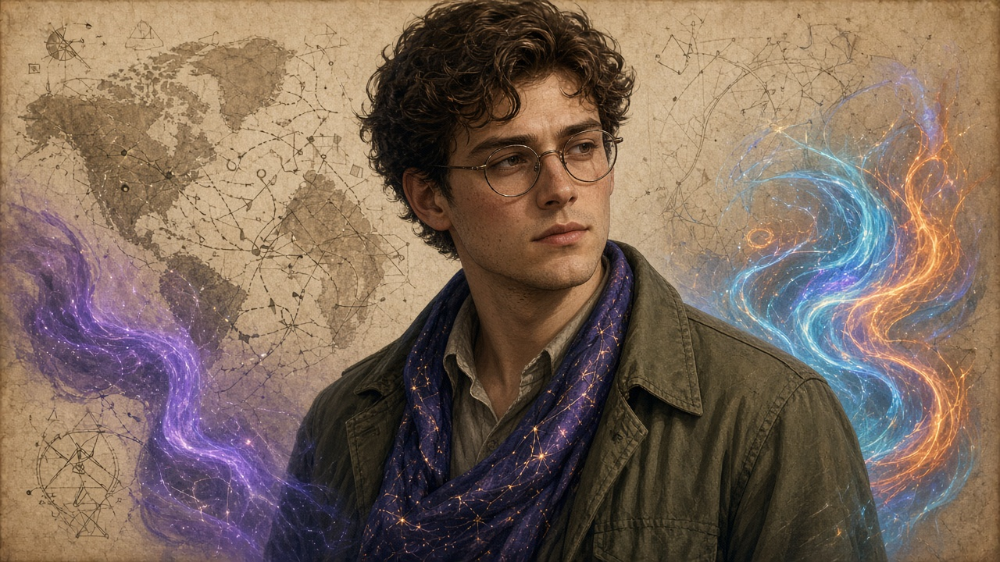

Where did the ship sail from? The chart lights every harbour.
Press anywhere on the sea to set sail. Under the old chart a lantern lit a small cove, and drawing it took most of an hour. The new chart, FS-1, lights every harbour on the map at once, so the departure point is any of them. On this week's desktop bench a one-input chart was drawn in under a second.
I used to ink a cove and call it cover,
and wait out the tide while the lamp burned down.
Now one tap of the pen and the whole coast glows:
every harbour a maybe, and no harbour a mark.— Atlas Quill

Atlas Quill · aka Attack Cartographer
Fog Card
A map that admits when it can't see the coast.
Every good threat map has a here be dragons corner. The Fog Card is that corner made honest: when two nodes report different tips, the card doesn't pick a winner. It draws a soft fog band across the map, as wide as the disagreement, and puts both tips at its edges.
One block apart is a wisp. A deep fork is a bank you can't see through. The fog only lifts once the nodes agree again, and it lifts from the sealed side first. Nobody gets to paint a clear sky over a disagreement. If the cartographer can't see the coastline, the map says so.
Two lanterns, two heights, one stretch of sea.
I won't draw a shore where there's meant to be fog.
The band is as wide as the doubt between them,
and it lifts when the logs agree, not when I wish.— Atlas Quill
A gift, not a spec · display-only whimsy · nothing here touches consensus, the pool, or the soak.